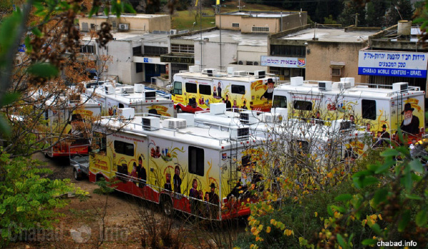

“Didan Natzach” in Nazareth Elite
The defense lawyers maintained that Chabad didn’t stand a chance. But Rabbi Nachshon, a devout and ardent follower of the Rebbe, tapped into his unwavering connection to the Rebbe and knew with certainty that the Rebbe would “turn things around.”

After a wearisome and drawn-out legal battle in the Israeli courts, the premises housing the Chabad-Lubavitch institutions in Nazareth Elite were recently restored to their rightful owners. Chabad began renting the buildings in 1980 and bought them outright in 1989 for the hefty sum of $285,000. The Lubavitcher Rebbe MH”M was presented at the time with the keys to all the buildings, establishing his ownership and control over the properties.
Among the institutions located on the area in question are a synagogue, the headquarters of both the Chabad Mobile Tanks Division and the Tzivos Hashem youth movement. There is also a mikveh and an active “Center for Judaism” catering to the general public and a part of the dormitory of the local Chabad yeshiva.
After many successful and vibrant years of activity these institutions, comprising 340 square meters, ran into severe financial problems. Due to these difficulties they were placed into the hands of the courts and subsequently put up for sale by public tender. The intention being that the proceeds of the sale be transferred to the creditors.
Rabbi David Nachshon, the executive director of these institutions, succeeded in winning the public tender. However, in an unprecedented and disturbing move, the court-appointed liquidator announced a new round of bidding; and the highest bids came from several local Arabs. (This will come as no surprise to those who know of the alarming phenomenon of local Arabs, backed by wealthy supporters from the Gulf States, trying to purchase land and properties in the area. Their goal is to create a de facto situation where Jewish areas slowly lose their Jewish majority and identity.)
The likelihood of the property ever being restored to Chabad hands was slim. The defense lawyers maintained that Chabad didn’t stand a chance. But Rabbi Nachshon, a devout and ardent follower of the Rebbe, tapped into his unwavering connection to the Rebbe and knew with certainty that the Rebbe would “turn things around.” He promptly penned a heartfelt plea to the Rebbe in which he related the sad saga and how all hope was seemingly lost, inserting his letter into one of the volumes of the Rebbe’s letters, the renowned Igros Kodesh series.
Rabbi Nachshon relates: “The letter that I opened to was astonishing. The Rebbe refers to the story in the Chumash of the spies who were dispatched by Moses to scout the Promised Land. He explains that their sin was caused by their erroneous belief that ‘they [the Canaanites] are stronger than us,’ implying that the Creator is powerless to carry out His own plan [of having the Jewish people inherit and settle the Land of Israel]. The Rebbe points out that if he [i.e., the recipient of the letter] strengthens his trust in G-d, he will see for himself that ‘We will surely go up and inherit [the Land].’
“When I passionately explained to the lawyer that I was convinced that we will be victorious, he decided to ‘take the plunge’ and start believing too.”
The group of local Arabs who wanted to buy the premises had offered a single cash payment for the purchase. This was in contrast to Rabbi Nachshon’s offer of an installment plan of fifteen payments. At the next court session, the creditors challenged the feasibility of the Chabad organization being able to adhere to the repayment arrangement made with the court. But the whole picture changed abruptly for the good when the prosecuting attorney announced that she would never agree to allow the property to be sold to another party. “In my extensive travels around the globe, I was always aided by the Rebbe’s emissaries, so of course I would never allow harm to come to them,” she proclaimed, thereby reversing the tide. This was no doubt also linked to her belief that it would be wrong to uproot the Chabad Institutions from the premises which they had occupied for more than thirty years.
This was only the first of more surprises yet to come. The judge presiding over the case was an Arab. “This understandably made us very uneasy. However in a way that can only be described as nothing less than miraculous, the Arab judge was very understanding and sympathetic to the merits of our case and approved our proposal, and, thank G-d, the deal was closed,” relates a very satisfied Rabbi Nachshon. “The belief in G-d and in His faithful shepherd, the Rebbe infused us with the necessary strength. We merited witnessing that indeed ‘there is someone who is running the show’…”
So, for the second time, the premises were sold to Chabad, this time at the price of 1.3 million shekels, rising to 1.5 million when including all expenses (equal to $ 420,000 USD), to be paid in 15 installments.
“We are now in the process of exerting all efforts to raise this enormous amount of money, and despite the difficulties, with G-d’s help, we will succeed in rising to the challenge.
“I call upon every follower of the Lubavitcher Rebbe, and to all those touched by Chabad activities around the globe to step forward and become a partner with us, by donating and helping to fulfill the commandment of ‘redeeming a captive from the hands of our enemies, pidyon shvuyim.’ There is no doubt that everyone who takes part in this mitzvah will surely be blessed with abundant goodness and outstanding success in all their endeavors.”
To become a partner in this critical inyan of the Rebbe please email: [email protected].
Beis Moshiach (staff). "“Didan Natzach” in Nazareth Elite." Beis Moshiach, no. 889 (July 25, 2013).